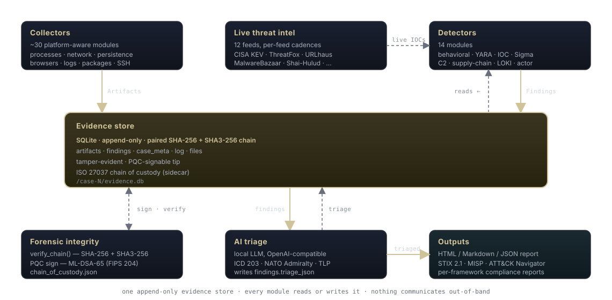

Architecture One evidence store, many components. Every module reads or writes it; nothing communicates out-of-band.
Big picture

Three rules govern how the parts fit together:
- Append-only. Once an artifact or finding is written it is
never modified. Updates are forbidden by the hash chain (any modification
invalidates downstream hashes and any PQC signature over the chain tip).
The single exception is the per-finding
triage_jsoncolumn, which is populated by the AI triage step and not covered by the chain. - Single source of truth. Detectors don't talk to collectors directly. AI triage doesn't see raw OS state. Reports don't re-collect. Everything operates on rows in the evidence DB. This lets you run any stage offline against an existing case directory.
- Algorithm-agile, data-driven. Detector behavior is
shaped by YAML rule files (
digger/rules/) and live cached feeds (digger/intel/). Compliance behavior is shaped by YAML control catalogs (digger/compliance/frameworks/). PQC algorithms come from what liboqs exposes at runtime, not a hard-coded list.
Module layout
| Module | Role | Talks to |
|---|---|---|
digger/core/ | Evidence store, base Collector class, runner, hashing, platform detection | SQLite |
digger/collectors/ | ~30 platform-aware artifact collectors | OS APIs (psutil), CLI tools, plist/registry |
digger/detectors/ | 32 detectors over artifacts: behavioral, YARA, IOC, Sigma, C2, supply-chain, threat-actor, service-version CVE, plus 12 Decepticon countermeasures, timeline | Evidence store, digger/rules/, digger/intel/ |
digger/firewall/ | Unified pf / nftables / iptables / ufw / firewalld / WFP audit + remediation | Evidence store, digger.ethics.contract |
digger/ethics/ | Codified ethical contract (10 principles, programmatically enforced) + pre-engagement scope attestation | Used by every state-modifying feature |
digger/intel/ | 15 live threat-intel feeds + background scheduler + composite multi-URL fetchers (NVD, SigmaHQ, MITRE ATT&CK STIX) | HTTP (CISA, abuse.ch, Spamhaus, GitHub, OpenSSF, NVD, mitre-attack, sigmahq, …) |
digger/ai/ | OpenAI-compatible client, ICD-203-compliant triage prompts and schema | HTTP (llama.cpp / ollama / vllm) |
digger/crypto/ | liboqs-backed NIST PQC; sign, verify, hybrid PQC-KEM + AES-256-GCM | oqs-python, cryptography |
digger/fips/ | FIPS 140-3 mode + KAT self-test + algorithm gating | — |
digger/compliance/ | 18 framework catalogs + control assessor + reports | Evidence store |
digger/tradecraft/ | ICD 203 estimative probability, NATO Admiralty, TLP, ACH | — |
digger/exchange/ | STIX 2.1, MISP, ATT&CK Navigator, TAXII 2.1, Sigma loader | HTTP for TAXII; pure Python otherwise |
digger/coc/ | ISO/IEC 27037 + NIST SP 800-86 chain-of-custody record | JSON sidecar file |
digger/report/ | JSON, Markdown, self-contained HTML reports | Evidence store |
digger/cli.py | argparse-driven entry point; sub-commands are thin wrappers over the modules above | All of the above |
Pipeline stages
Collect
The runner pulls the list of collectors appropriate to the current OS from
digger/collectors/__init__.py:all_collectors(). For each, it
calls Collector.run() which:
- Checks
supported_osandrequires_admin; logs a skip if not satisfied. - Iterates the collector's
collect()generator, callingstore.add_artifact()for eachArtifact. - Catches any unexpected exception, logs it, and continues.
The runner also writes case metadata, opens a chain-of-custody record, and
appends collection_started / collection_finished
events.
Scan
Detectors implement detect(store) -> Iterable[Finding]. They
read artifacts back from the store via store.iter_artifacts(collector=...)
and emit Findings, each tagged with severity, MITRE ATT&CK technique,
artifact references, and free-form evidence dict.
Detectors are independent — order in the registry doesn't matter except
TimelineBuilder, which runs last and consumes other findings to
synthesize a chronological event view.
Triage
TriageRunner walks the findings (above a configurable severity
threshold) and POSTs each plus its referenced artifacts to the LLM. The
response must conform to a JSON schema enforced by the prompt and (where
the server supports it) by structured-output. The triage payload is stored
in findings.triage_json. Finally, a case-wide executive summary
is generated and persisted to case metadata.
The schema requires IC-grade outputs: estimative probability, analytic confidence, source/info reliability, TLP marking, assumptions, alternative hypotheses.
Report / export
Reports and exports never re-derive evidence. They only read the SQLite store and the case_meta table.
- JSON
- Full structured dump for downstream tooling.
- Markdown
- Print-friendly, embeddable in tickets.
- HTML
- Self-contained, embedded SVG, severity-filtered finding cards.
- STIX 2.1
- Bundle with incident, indicators, attack-patterns, TLP marking definitions.
- MISP
- Event JSON with MITRE ATT&CK galaxy tags.
- ATT&CK Navigator
- Layer JSON for the matrix viewer.
- Compliance
- Per-framework JSON/MD/HTML with pass/fail/manual/partial per control.
What does not happen automatically
Some design choices are deliberate non-features:
- No cloud telemetry. digger never phones home, never sends
the case anywhere. Intel feed fetches are the only outbound traffic, and
they're explicit opt-in (you have to run
digger intel updateordigger intel watch). - No automatic remediation. Findings describe what was observed and recommend next steps. They never modify the host. Killing processes, removing files, or quarantining is your call.
- No live blocking. digger is a forensic snapshot tool, not an EDR agent. It does not hook syscalls or inject into kernel space. Run it periodically or on suspicion.
- No automatic Internet IOC enrichment of every artifact. IOCs from cached feeds are matched against artifacts locally. We do not submit hashes / URLs / IPs to VirusTotal or similar by default.
Dependency graph
cli.py
├── core.runner core.evidence, coc.record, collectors.*, fips
├── detectors.* core.evidence, detectors._rules_io ←─ rules/*, intel/feeds
├── ai.triage ai.llama_client, ai.prompts, core.evidence
├── crypto.pqc fips.mode (gating)
├── compliance.assessor compliance.frameworks/*.yaml, core.evidence
├── exchange.* tradecraft.tlp, core.evidence
└── report.* assets, core.evidenceThere are no circular imports. Modules under
digger/compliance/, digger/exchange/,
digger/intel/, and digger/ai/ can each be used
standalone if you import them directly, without ever touching the collector
or detector code.